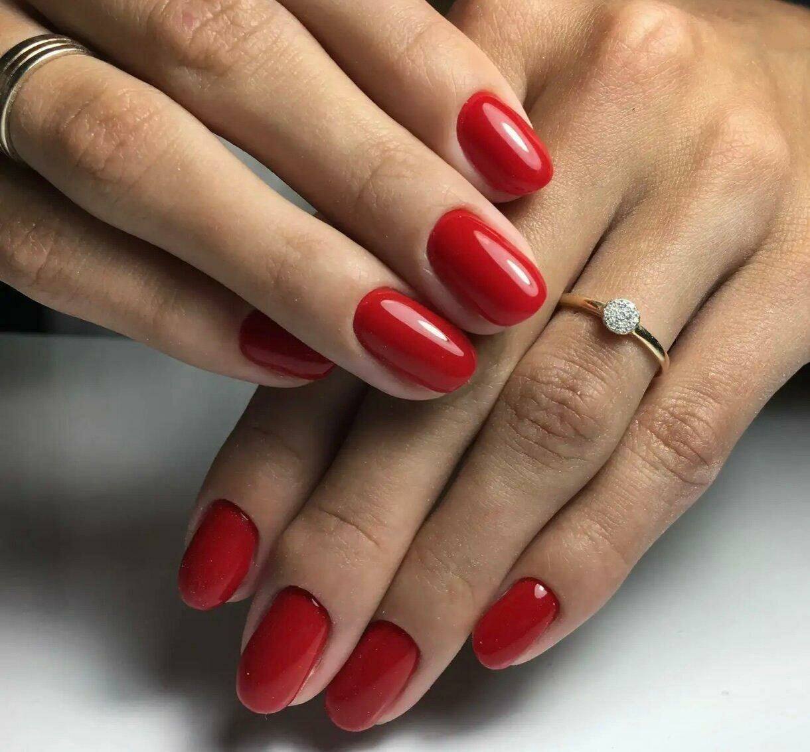
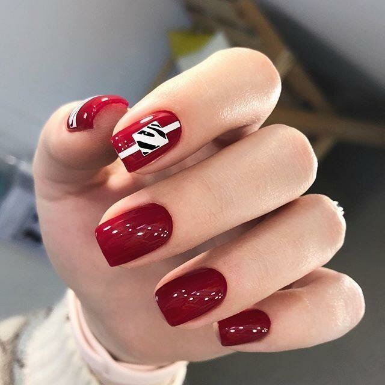
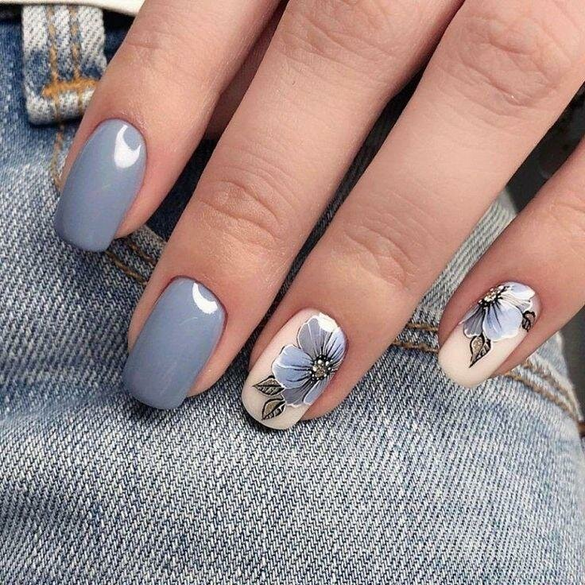
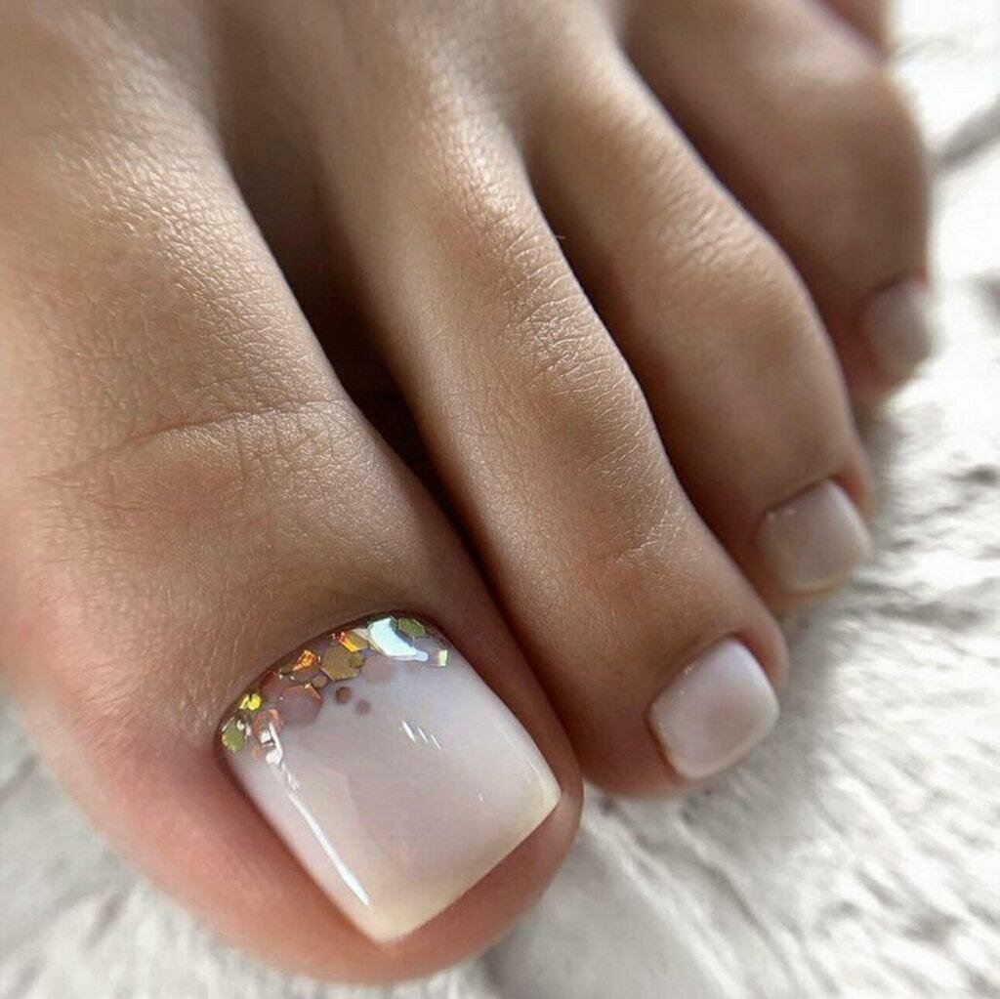
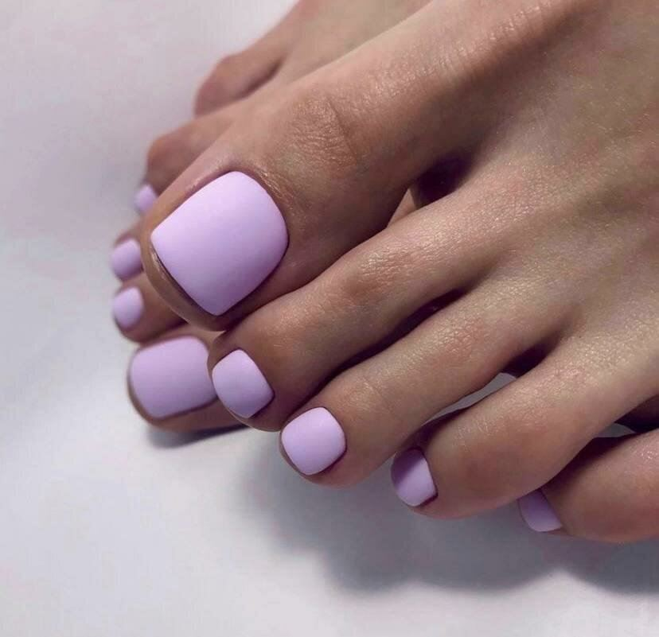
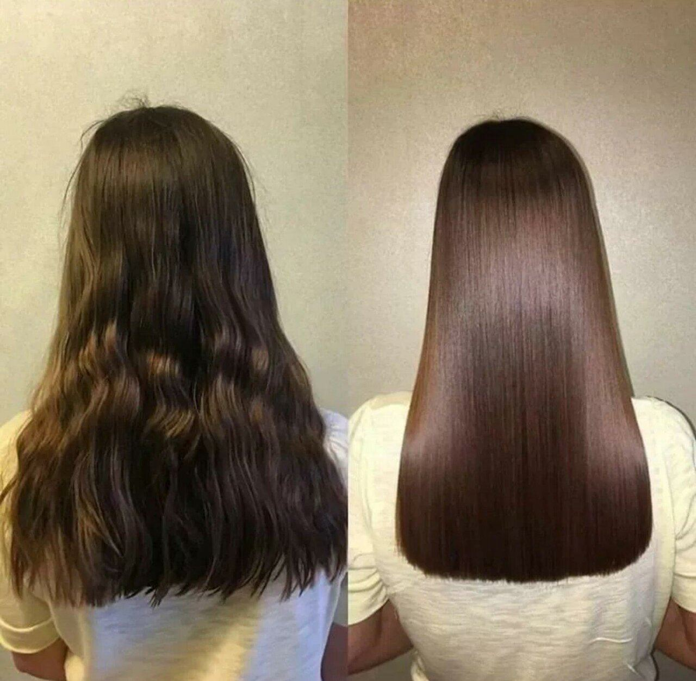

Салон красоты · косметология · парикмахерская
Маникюр, педикюр, стрижки, окрашивание, косметология и массаж — около 220 метров от метро «Гостиный двор».
+7 (952) 375-46-28
Работаем каждый день с 10:00 до 21:00. Ногтевой сервис, стрижки и окрашивание, восстановление волос, аппаратная косметология, массаж и депиляция — в одном салоне в переулке Крылова.
Точную цену уточняйте при записи.
Мастер маникюра — знаток своего дела: руки красивые, плюс ценные советы по уходу. Не навязывает лишнего, учитывает вкус клиента.
Хожу на маникюр к одному мастеру уже много раз — восторг. Не просто делает красиво, а восстанавливает ногтевую пластину, разнообразна в дизайне и приятна в общении.





| Понедельник | 10:00–21:00 |
| Вторник | 10:00–21:00 |
| Среда | 10:00–21:00 |
| Четверг | 10:00–21:00 |
| Пятница | 10:00–21:00 |
| Суббота | 10:00–21:00 |
| Воскресенье | 10:00–21:00 |
Позвоните или напишите в мессенджер — подберём мастера и время.
+7 (952) 375-46-28